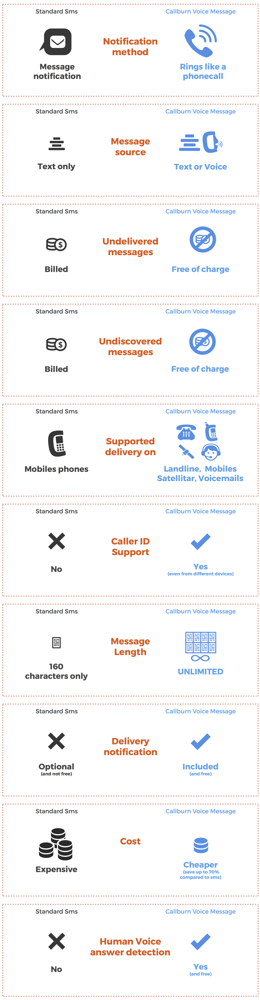
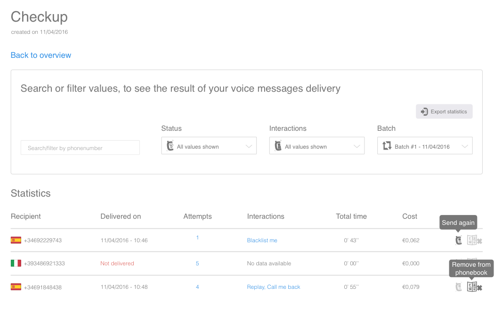
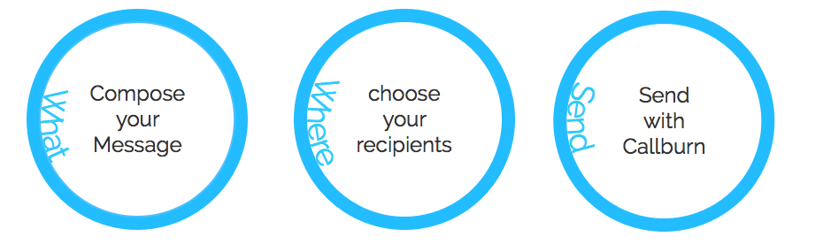

Introduction
Callmessages
What are Callmessages
Callburn is a Fast, Simple, and Flexible alternative to SMS “Short Message Service”, providing voice delivery instead of a text.
We call them “Callmessages” and they ring instead of a single sms tone, requesting an answer to discover their content as “they arrive like a normal voice call and the content is inside that”.
SMS disvantages
SMS are based on a very old technology, providing a lot of disadvantages, some examples:
- Marketing SMS are less effective because customers prefer a warm voice over a cold text of 160 characters.
- Emergencies SMS are not seen immediately, making them useless for urgent or important communications;
- Customer Care SMS are really worst because doesn’t support any kinda of live interactions from the user receiving it;
- Fund Raising SMS costs a lot and doesn’t provide any blacklist for letting user unsubscribe from the list
With Callmessages all these disadvantages are gone, you can look a nice comparison table in Sms Comparison section.
Voice or Text as source?
You can provide both text and voice as source message content;
`Our systems will always deliver a callmessage cause this is a main feature of Callburn Callmessages
Although Callburn is a new technology, it doesn't rely on mobile data to deliver your callmessages and supports every kinda of device that can receive a normal phone call (like fixed phones or satellite).
Cheaper is better!
Also is really a lot more cheaper than SMS and all undelivered messages are not charged.
No complicated long-term contracts or plans are required with Callburn;
We just work with prepaid credit, and you can recharge **exactly the amount you want to.
We don't make any difference if you are a small customer or a giant company, everyone will always have got the **same best price.
Some examples
Callburn can to be used by everyone, for a lot of purposes, some examples here:
Emergencies: sending time-critical informations
Schools: notify parents about children informations
Promotional: marketing campaigns
CRM: nice effective customer relationship management
Air Companies: notify flight schedulation changes
Banks: for increasing productivity offering better services
Politicals: for a better political message
Quality Assurance: immediately advice your customers
Callburn Story
Callburn is not new in this world, since from 2005 we are providing our technology in Italy for many customers.
Due to an high request of services, we started to think about bringing up the service Worldwide making Callburn alive and better. The first goal that inspired us to do this was provide voice to all the handicapped mute users, making their lives better.
The platform provides a wealth of features and functionality that can help really everyone.
Start to use Callburn now
You can try it now, or continue to read this documentation to deeply understand this awesome service.
If you have questions or for every kind of request, feel free to Contact us by our Live Chat, we will answer you very very fast.
Sms Comparison
Callburn Callmessages are better, discover reason why with the help of this comparison table:

How they work
“Imagine a **callmessage* that arrives like call, ringing until the destination doesn’t pickup the call*”
For a better understandability, we want to show you some steps from the message creation until delivery:
- User writes a text, or uploads an existing callmessage, then chooses some recipients (contacts), and sends it (or decides to schedule the send) – you can find all these steps documented here.
- Callburn will try to deliver the message by doing a maximum of 5 delivery retries pausing 5 minutes between the attempts
- If message gets delivered, the user’s prepaid-credit will be charged for total message time (as indicated into prices page)
The messages will be sent using your own fixed or mobile phone caller id, so the destination can immediately identify you.
Callburn messages also supports interactions which gives ability to the user to make really great things.
Callburn allows you to create a personally and accessible Phonebook, either to use it for sending callmessages or simply to save the phone numbers, and export them in a second time. You should also arrange the phone numbers saved in Groups that can be renamed, deleted and used for the sending of Callmessages with Callburn.
Callburn gives you all instruments to compose a Callmessage and send it or schedule it. All these activities will be saved and available in Overview section where you can find all your saved, scheduled and sent callmessages. For every callmessage you can see associated recipients, its status, and all the resulted statistics if the message has been sent, like number of delivery attempt and interactions made, if any.

As we can see, for every item of the Overview table, Callburn provides interactive mouseover that can explain their functionalities and give to the user very useful informations about message’s features. To view more details you can click both on Cost value or in Show statistics action, that can be found by clicking in More list. It will be shown the Overview statistics table (next image) where user should see and export all achieved results of the callmessages delivery.

For business users that want to integrate Callburn into their custom application, we also provide API to easily use Callburn as Callmessage Gateway.
How to use

Only three steps are required in order to send your Callmessage with Callburn
- Compose your callmessage, from a text or an audio message
- Choose recipients, (contacts) where you want to deliver your message
- Send it, after to have configured some advanced features like the interactions
Using Callburn Technology it’s extremely Simple, you can do it in different ways:
- From our WEB application
- From our API by reading the developer API documentation that you can find in
Compose Callmessage
As very first thing, you have got three methods for generating the voice content.
- Write a text
- Upload an audio file
- Choose from Templates
The first, and most flexible way, is write a text that will be converted into a voice, the other one is upload an existing audio file and the last one is to choose an audio file from the Templates table.
In the first two methods, before send the message, you can always listen your chosen callmessage and also save it as a Template, to reuse it in another send.
As you have seen in How they work section, Callburn allows you to see all your saved Callmessages in Overview section. It is also possible to reuse a specific callmessage in this table using the apposite Reuse Message function.
Method 1: Write a text
The easiest way to compose a Callburn callmessage is just writing it.
You can easily choose preferred voice (from a big number of voices) in a wide selection of available country languages.
This could be an obligated choice in some situations like:
- Impossibility to use the voice under certain circumstances
- Physical handicap
- Custom message for each sending
Method 2: Upload an audio file
Another simple method, to provide the callmessage to send with Callburn, is to upload an existing audio file.
It can be useful select also by using the drag and drop feature.
Method 3: Choose from Templates
Callburn provides a specific section where customer can save all his created callmessages.
Message templates are useful and let you to save a lot of time when sending generic messages.
You can create Callmessage templates both from web or from your mobile device platform as you desire. After the creation you can find them, all together, in the Callmessage Templates table shown in the following image.

Choosing Recipients
After composing the message, you have to choose the recipients (contacts) to whom you want to send your callmessages.

As you can see in the image, Callburn provides multiple ways to put recipients into the system, you can choose between these:
Like we have seen in the previous step, in Overview section, it is also possible to reuse the recipients, already used for a callmessage, by using the apposite Reuse Recipients function.
Method 1: From Phonebook
As better explained in the Phonebook page, Callburn allows you to save and manage, in a kind of virtual phonebook, your favorites phone numbers.
In this step, you can easily select from Phonebook either Contacts or Groups, for send your callmessage.
Moreover if you want to remove the entire group, you need to remember that there should be, one or more scheduled deliveries, that will not be able to be completed.
Method 2: From your mobile device
We give you the possibility to link your Callburn account, created from web, with both iOS and Android platforms.
So, in this step, you can import your entire device phonebook into Callburn account, to choose your personal contacts to send them a callmessage with Callburn.
Method 3: From file or manually input
You can choose your recipients by uploading a file with a list of phone numbers, or simply by typing them one by one, or also by pasting them in the provided box.
We support both txt, csv, xls and xlsx files .
If there are duplicates the system will detect them and will return a duplicate status.
You can upload file from the web interface through basic file uploader or Drag&Drop interface.
You can also choose to import recipients manually, in this case it is enough to remember to put phone numbers with international prefix, both if you type them than if you paste them.
Before proceed with the next step, you can always have a preview of the imported list of recipients.
Message Delivery
We can say for sure that this last part, of Compose New section, is the most complete and powerful instrument that we could give you. Here you can revise and set a lot of features, to personalize your callmessage.
In particular you can revise and set:
- Playback
- Human Voice answer detection
- Delivery repetition
- Sending from Caller ID
- Estimated sending time
- Maximum costs
- Email notification
From here, you can also configure Message Interactions, that Callburn provides to make your communication as more as complete and useful, like we will see in detail in Interactions page.
Every single interaction performed by the recipient will be saved and easily recovered in Statistics section of the Overview panel. as we have seen in How it works page.
To make you sure that all features are correctly set, Callburn allows you to send a Preview Message on your mobile. This call will be billed as a normal Callburn Callmessage.
When you push on “Send now” button, Callburn tries immediately to reach your destination by calling it.
For a better understanding, we explain in detail what happens: * Callburn calls your recipients once; if the destination answers, then the call will be billed to you and marked as “Successful Call”.
* If your destination doesn’t answer, the system will retry to call it other 4 times every 5 minutes until it answers.
* If your destination still doesn’t answer, we will mark this call as “Not Answered” and the call will not be billed to you, as also busy and invalid recipients.
If you want give a scheduling to your delivery, Callburn provides a very complete panel explained in detail in the next Schedule page.
Now, let’s have a look to all the above features that you can set in this step, one by one.
Playback
You can set here, how many times the callmessage should be played back; by default the playback is only one time but we may set it until maximum of five times.
Human Voice answer detection
This parameter may be enabled or disabled.
If enabled, Callburn will wait for an human voice answer before delivering your message and, if not detected, it will not deliver the message.
This will be useful to assure delivery to a real human answer instead of answering machines, robots, or low network coverage providing call quality issues.
If disabled, all recipients may listen your callmessage after they pick up the phone.
By default this functionality is enabled.
Finally, if you enable Human voice detection, you can flag a box to allow to retry delivery of the callmessage until a human voice answer is detected. The number of allowed retries is usually five.
Delivery repetition
There are some situations where you must communicate with a group of recipients with a certain temporal frequency.
Openings academic year , monthly business meetings, fiscal deadlines communication, are only a few examples.

You can set, in the above panel, how many times you want to repeat your delivery, and how often (number of days between two repetitions).
You may always edit the next delivery from the overview section and see also all completed deliveries from overview statistics table, using the apposite Batch filter.
Sending from Caller ID
A great strength of Callburn is that all your recipients will be able to identify you always, because you can send the messages with your own Caller ID.
You can add a not limited number of valid Caller IDs, in settings section of your account, and in this step, you can choose which to use for sending your callmessage.
Estimated sending time
Based on number of recipients, Callburn will give you an estimated time to deliver your callmessages.
If you don’t change this parameter, Callburn will try to deliver at maximum speed using all its free channels.
If you want to split delivery through more time, then you could change speed of delivery chosen from 30, 60, 90 and 120 minutes.
Maximum costs
This parameter allows you to have always a complete view of how much you will be charged, for deliver your callmessages.
You can see all about the Callburn cost in Prices page.
Total cost of your delivery depends from a large amount of advanced settings. They are the length of callmessage, total number of recipients, how many times must be played back the callmessage, interactions if recipients will use them.
Email Notifications
As the last thing, you can enable in this step email notifications, to stay always updated about all our news and special offers, and to be warned on all that concern with your Callburn activities.
You can enable email notifications also in settings page of your account.
Features
Interactions
In Message Delivery page, Callburn allows recipient to configure Callmessage Interactions.
This feature is one of the hard point of this application.
Give power at your Callmessage using Interactions
There are four actions that recipient can configure before sending a Callmessage:
It is possible to configure one or more of this features, for the same Callmessage, or don’t configure none of them.
It is also possible to nest interactions between them.
There isn’t limit for what Callburn allows to do!
Replay Callmessage
If the callmessage speaks about an address or telephone number or something else important, it is a good practice to use the Replay Callmessage feature.
It allows the recipient, by simply pressing a digit on his phone keypad, to play back the message and take note of it.
To activate Replay feature you must choose a keypress to associate with.
Activate this feature may cause variations of final message length, then may change final cost. See details in prices.
For example, if your total message length is 20’’ and anyone of your recipients, uses “Replay Callmessage”, your message will be replayed and total message length can become 40’’.
Call Live Transfer
Through the Call live transfer interaction, Callburn is able to live transfer the recipient’s call; the recipient has received your Callmessage, sent with your Caller ID, and asks for a transfer, simply by pressing a key in his receiving device.
For better understand what really happens, let’s a look to the image:

When your recipient asks for a Live Transfer, a second call to your CallerID number is made, and if successful, you will be connected to your recipient call (the one which received callmessage).
To configure this interaction it is required to choose a keypress to associate with. The request of live transfer will be sent by default at your main Caller ID, if you have more than one validated Caller ID, then you can change it and choose from your caller id list.
To receive the transfer call request, remember to keep your phone ready for receiving calls (free and under network coverage). In case of busy Caller ID, Callburn tries to deliver the transfer as long the recipient stays waiting on to be connected.
You should limit concurrent live transfers on your Caller ID, when decide to activate this Live transfer feature.
This is useful when your caller ID, receiving live transfers, cannot accept simultaneous calls (example, a mobile that supports to talk with only one person at time).
When this limit is reached, we will stop the delivery of other callmessages until the value is less than the configured one.
Call me Back
Callback me back feature allows the recipient to book a callback to deepen the subject of the callmessage, in a more convenient time.
The recipient may request a callback pressing the corresponding callback phone digit.
Look the next image, to understand what Callburn really does:

When your recipient asks for a Call Me Back, a second callmessage will be reproduced to inform him about request acknowledgement. For this reason, you must put a second callmessage.
You can choose this second callmessage, by uploading an existing audio file or by choosing it from the saved templates callmessages. You can also compose this message also using the TTS technology. After composing you can listen the resulting audio file, before to choose it.
Blacklist me
The last advanced feature, to create an interactive communication, is the Blacklist me, that allows to identify who doesn’t want to receive anymore calls from your Caller ID.
To better understand this feature, let’s have a look to the next image:

When your recipient asks for a “Blacklist me” interaction, a second callmessage will be reproduced to inform him about request acknowledgement, and his phone number may be deleted or deactivated for messages reception.
In some countries, “Blacklist me” feature, could be a legal requirement.
You can choose the second callmessage by uploading an existing audio file or by choosing it from the saved templates callmessages. You can also compose this message using the TTS technology. After composing you can listen the resulting audio file before to choose it.
Schedule
As we have seen in message delivery, Callburn supplies you a set of features to give more effect and power to your callmessages and, it allows also to schedule and split your deliveries through more days.
For this purpose, Callburn’s engineers developed a very complete, useful and intuitive panel, with a lot of graphical instruments that will lead you to do anything you need with your callmessages.
Let’s see in details how to schedule your callmessages, starting from the following image:

The first thing that you must select in this panel is the day of scheduling, choosing it from the calendar (1) and, if you want, you can also set a time slot (2) for that selected day, with hour and minute.
For every day you can select until 4 time slots, everyone with its personal color, using plus icon, moreover for every time slot chosen, Callburn gives you the possibility to configure message delivery speed (3) that goes from zero (max speed) to 2 hours.
Finally, If you want to batch select same-days for more times you can do it clicking on repetition icon (4), where you can set one or more days specifying for how many weeks you want the multiple select.
While you set all these parameters to schedule your delivery, Callburn gives you the result of your selections in real time. For the above image, for example, Callburn will give you the following settings:

As well as all your created messages, when you create your message and schedule its sending, you will find it in Overview table, and before to complete the delivery, you can always editing it if needed.
Batch Send
A very useful functionality to create and send callmessages with Callburn, is the Batch Send.
You can supply both recipients and callmessages all in one single file; moreover it is possible to send a different callmessage for every recipient of the list.
Batch send allows you to send multiple batch messages using a file, with this format:
phonenumber, text message
Allowed formats are .xls, .xlsx, .csv, .txt file.
In the first step of Batch Send, you must select the language, and your preferred voice, to convert all the texts inside the file in a set of audio files using TTS technology.
After file uploading, you can review both recipients and texts, add functionalities and send your callmessages to recipients.
As well other callmessages, you can find your batch delivery in Overview table and see all details of the delivery in Overview Statistics table.
Phonebook
Callburn provides an entire section to manage your favorite phone numbers that can be saved, editing, deleting, grouping and so on.
To create your Phonebook you can easily batch add your contacts by uploading a file (csv, txt, xls, xlsx) or by pasting text or simply typing a phone number at time.
You can upload file from the web interface through basic file uploader or Drag&Drop interface.
If you need, it is possible to add extra informations into the file. You can use one of the following supported delimiters:
. , : | tab
Supported format file is (separated by comma, for example):
phonenumber, group name, name
As we have seen, to create callmessages, or to choose recipients, Callburn allows us to use both web application or mobile device platform; at same way, also in Phonebook, we may import phone numbers from the mobile phonebook, by using one of the available mobile applications.
After Importing the contacts list, by pasting them or by uploading a file, you can can always revise the importation result, before saving it.
You can check in this step, contacts correctly inserted and also errors, as shown in the next image.

The Phonebook section has got two subsections: one that contains all imported contacts and the other one that shows all created groups. From either subsections it is possible to send a callmessage by using the apposite action.
Phonebook is a useful instrument, that gives you the possibility to organize all your phone numbers to send them Callmessages, avoiding to import them every time you need.
Callburn allows also to Export your entire phonebook or some groups in a .csv file, that can be opened in various spreadsheet applications - like Excel.
Prices
One of the strong points of Callburn Callmessages is their prices, really CHEAP! The other is our simple Pricing; only one plain, you will pay only if your message will be listened.
Think that a standard SMS, costs at least twice of a Callmessage, and you pay for all sent messages, instead of only for delivered ones.
You can consider a standard SMS, which is composed by 160 characters, like a 14’’ audio callmessage.
To make you free from any preoccupation and further simplify your life, Callburn provides an Autorecharge feature that, if enabled, it will recharge automatically your balance, whenever it goes lower than a minimum amount.
After these first 20 seconds, only the EFFECTIVE DELIVERED message seconds will be billed.
For example, if your recipient receives your message of 3 minutes, but he listens 24 seconds and hangs up the call, you will be billed for 24 seconds only.
There are no plans or strange bundles or tariffs to choose or understand; we offer the best tariff to all the users, cause we don’t make any difference between a small and a large customer.
Amount Calculator
You can always know exactly, how much you will spend with us, using our Amount calulator; it allows you to know total cost and shows the different prices between countries.
It’s really simple, just put in message destination, total message length and finally successfully delivered quantity.
You can find it also in financials page of your account, so you can always know the effective cost for deliver your callmessages, before to recharge your Callburn balance.
Callmessage’s production
We provide various ways to create callmessages, as seen here, with different prices:
- Audio uploaded, both from web or mobile application, are totally free of charge
- BurnSpeaker, is a premium service available only in some countries and prices are made on request
- TTS, is free for each audio created with it, from both Web Application or API
Typical Uses
Now, we know well what is Callburn and how to use it. But someone could they think:
What can be useful callburn?
There are so many fields, of day life, in which Callburn finds its application, that we could write an encyclopedia. However we will limit to write the most important and common uses of this awesome application.
As you will see, Callburn is useful for activities that are also much different one from another. Let’s see some of these in detail.
Public Entities
There are many public activities that may use Callburn to give efficient services to the community.
Let’s see, for example, a school and the civil protection.
School
How many calls should make a school’s secretary to inform the parents about schoolchildren’s activities?
By using Callburn, a School can simplify communication between parents and personal.
The secretary can focus on other important works, while communications will be delivered with certainty to the families concerned.
Civil Protection
The Civil Protection Department was created to ensure national security , trying to prevent and avoid human disasters in a country .
When born the need to communicate an impending weather event, for example, timeliness is the watchword.
To communicate an Emergency the faster and secure method is Callburn.
A municipality may issue an alert to all residents by using Callburn. The timeliness in critical situations is very important, “it may save many lifes”.
Corporate Marketing
Productivity of a company is measured, not only by the amount of goods or services capable of producing, but by how many will be able to sell.
Callburn may be useful in many business activities that a company must do in action, to increase customers and better manage existing ones.
After taking care of the steps of production, advertising and selling, need to manage customer relationship.
Also in this last step, using Callburn application is the best way to keep live the communications. It can be used for order management, billing communication, customer satisfaction, and so on.
Quality Assurance
“Quality assurance comprises administrative and procedural activities implemented in a quality system so that requirements and goals for a product, service or activity will be fulfilled.”
To ensure the success of a new product, a company must perform many steps and the most important one is the QA.
Despite this, it is possible that , after the release on the market, a product has a defect not expected.
In situations like this, Callburn may be very useful.
A callmessage may inform you of the recall of the product that you have purchased, simply by a call . It may also communicate, to go back where you have purchased, to replace the product with another in which the bug was solved.
Politics
There is a moment, in every democracy, when politicians try to persuade people to vote for them. We speak about Election Campaign.
During the period before the Election Day, all the political candidates use a lot of methods (legal or not) to manifest their intentions and make many promises to the people.
What better opportunity to use Callburn! It can be used before , to do a poll on voting preferences, during , to try to influence people’s thinking, and after , for thanks.
Air Companies
Are you arrived in the airport and your flight was canceled? Have you tried to find the reason and discover that an sms or mail massage was sent to you, but you don’t have seen it?
Keep calm! Callburn will not allow that this could happen another time!
By using Callburn, the air company knows well if a communication was received or not from you, since Callburn calls you on your mobile and it is able to be very, very insistent.
Banks
Banks play two roles in contemporary days.
They Give Credit providing a service to the community and, in the same time, they sell various products to their customers, trying to be as competitive as all the other companies in the market.
For both these functions a bank can use Callburn application.
A bank can use Callburn , to handle daily communication with account holders, both for essential communications and urgent, and for the less urgent ones, but equally important.
In addition to managing the relationship with the customer, a bank offers new banking products to increase its profits. It can use a callmessage to ask its customers to see, for example, all the advantages of the low-rate mortgage .
Job Hunting
The easiest way, for a company, to find staff, is to do it with Callburn.
An agency usually has a list of candidates seeking a job and, periodically, has to call one by one all of them , to offer employment opportunities . For each call , it must be assessed the degree of interest of the candidate, taking an appointment or not.
All these long and tedious steps can be bypassed by putting phone numbers list, writing a text message and lunching Callburn application that easily reaches all candidates who can automatically express their interest in the position available. By pressing a telephone key, candidate can replay the callmessage, or ask for more information to the agency, or schedule a recall.
Frequent Asked Questions
- What is Callburn?
- How it works?
- How much does the service cost?
- What should i do to start using Callburn?
- Can I call only mobile phones?
- When i have to pay?
- How can i add a callmessage?
- There is a message length limit?
- Can i use my personal caller ID?
- Can i choose to hide my caller ID?
- How can i understand if my callmessage is delivered?
- Can i schedule callmessages sending?
- How can i recharge my credit?
- There is an expiration for the credit?
- What happens if my credit is insufficient to send out messages?
1. What is Callburn?
Callburn is the evolution of mobile SMS (short message service), using voice instead of text, giving a lot of benefits that sms can’t offer. See more here.
2. How it works?
The recipient will receive a normal call instead of a SMS notification and will have to answer to hear the message content. The call will be made using your personal Caller ID and only answered messages will be charged. For more information go in how it works page.
3. How much does the service cost?
The cost of Callburn is simple to calculate ad also very cheap. Starting from 2,9 eurocents for the first 20 seconds and then you will pay only for the effective length of the call (billed at the second).
Here there is an useful instrument to calculate your cost. Find more details in the prices page.
4. What should i do to start using Callburn?
You can start using Callburn easily from our web site, going in the register section is requested to put a valid email address where we will send a confirmation email. After confirmed your email address you should supply a valid Caller ID that will be used to start send Callburn Callmessages.
5. Can I call only mobile phones?
No. With Callburn, your Callmessages can be delivered to every kinda of phones including landline and satellite.
6. When i have to pay?
You have to pay only after a message is delivered, since your credit will be charged only after the delivery of the message. No cost will be applied for undelivered messages (no answer, impossible to reach, inexistent phone number, busy phone, and so on). You can find more informations here.
7. How can i add a callmessage?
Adding a Callmessage is fast and simple. You can do this in different ways. One is to write your text using our TTS (text to speak technology). You can also upload an existing audio file that you have first created, for example, recording your own voice. See more in Compose Callmessage page.
8. There is a message length limit?
No. Callburn will deliver your callmessage, both if it lasts 5 seconds and if it lasts 30 seconds, and until 20 seconds you will pay always the same cost, as best explained here.
9. Can i use my personal caller ID?
Yes. When you register in the Callburn application, you must enter a valid caller ID, and you must use it for deliver your callmessages. Moreover you can add others valid caller ID, in a second time, and choose one of these for the following deliveries. See details here.
10. Can i choose to hide my caller ID
No, caller ID can’t be hidden.
11. How can i understand if my callmessage is delivered?
Callburn application will give you detailed sending statistics in the Overview section of Messages, where you can see all states of your callmessages, if delivered or undelivered, in addition to many other informations.
12. Can i schedule callmessages sending?
Yes. You can create a callmessage and schedule it, to be sent in different times or days. You can also schedule recurrent send. See more here and in Schedule page.
13. How can i recharge my credit?
Credit can easily recharged using secure PayPal circuit or Bank Transfer.
14. There is an expiration for the credit?
No, your credit will never expire.
15. What happens if my credit is insufficient to send out messages?
You will receive a notification from us and your deliveries will be temporary stopped until a recharge will be made. You can configure the lower limit under which we will notify you. You can also enable auto recharge feature, that allows us to directly bill you when your balance goes down the low balance alert value. Go here for details.